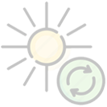

8 (800) 707-71-24


KARBON İÇEREN ATIĞIN YENİDEN İŞLENMESİ İÇİN MOBİL KOMPLEKS
elektrik ve termik enerji üretimi imkanı ile
Kurulumun nasıl göründüğünü ve çalıştığını 2 dakikada öğrenin ve ayrıca tüm ana avantajlarını takdir edin!
Ticari bir teklif için bir başvuru formu doldurun:
Mobil kompleks, aşağıdaki atık türlerinin yeniden kullanımı için tasarlanmıştır:

evsel atıkları (plastik, ambalaj, giyim, ağaç malzemesi vb.);
tıbbi atıklar (bandajlar, şırıngalar, damlalıklar, laboratuvar atıkları, süresi dolmuş ilaçlar vb.);

karbon içeren ile karıştırılmış (50/50) biyoorganik atıklar;

çeşitli endüstriyel atıklar.
Atık bertarafı prensibi nedir?
Atık değerlendirme prensibi termokimyasal dönüşüm teknolojisine dayanmaktadır.
Termokimyasal dönüşüm, önemli miktarda termal enerjinin üretimiyle devam eden (ek bir modülün "Geri dönüşüm" ünitesine kurulduğunda termal enerji elektrik enerjisine dönüştürülebilir) karbon içeren malzemelerin (atıkların) sentez gazına ayrışmasının ve dönüştürülmesinin bir zincir termokimyasal reaksiyonudur.
Faydacı modül, D-500 modeli
Geri dönüşüm süreci nedir?
Mobil kompleks reaktörünün (lütfen şemaya bakınız), içindeki sıradan ağaç kömürünü tutuşarak, termokimyasal dönüşüm zinciri reaksiyonunu başlatmak için yeterli olan 400 ° C'lik bir sıcaklığa kadar yaklaşık 30 dakika içinde ısıtır.
Karbon içeren atıklar reaktöre yüklenir, bu reaktöre oksijen erişimi sınırlıdır.Reaktörde termokimyasal ayrıştırma işlemi süresinde atıklar girdap yuvasına giren (lütfen şemaya bakınız) üst ısıl değerli sentetik gaza dönüştürülür, ve termal enerji üretimi için kullanılır.
Reaktördeki çalışma sıcaklığı aralığı 1.100 ° C ile 2.000 ° C arasındadır, bununla birlikte egzoz sisteminden çıkan gazların maksimum sıcaklığı (lütfen şemaya bakınız) 265 ° C'yi geçmez. Kül kalıntısı ticari amaçla kullanılabilir (inşaatta, petrokimyada).
Termokimyasal dönüşüm metodu ile yakma arasındaki temel fark oksijen eksikliğidir, bu nedenle zehirli ve toksik bileşiklerin (dioksinler, furanlar vb.) oluşumu için hiçbir koşul mevcut değildir; aynı zamanda atmosfere yayılan emisyon seviyesi tipik gaz kazan dairelerinkinden daha düşüktür.
Böylece bu atıkların geri dönüşümü teknolojisi maksimum en çevre dostudur.
Yardımcı ünite aşağıdaki yapılandırmalarda satın alınabilir:
1 | D-500
Geri dönüşüm kapasitesi: 2000 kilodan daha az veya 15 metre küp / 24 saat içinde


Toplam boyut: uzunluk 6000 mm, genişlik 2400 mm, yükseklik 2400 mm;
İstasyon kütlesi: 5420 kg.;
Nominal gerilim, V: 380 V +/- 10%;
Frekans, Hz: 50-60 Hz +/- 2%;
Maksimum toplam güç tüketimi: 550 W;
Çalışma modu: 24 saatlık;
Tam çalışma moduna ulaşması için gereken süre: 45 dakika;
Sürekli çalışma süresi: 150 saat;
Atık geri dönüşüm oranı: 99,9 %’a kadar - Termokimyasal dönüşüm tabi olmayan elemanların (cam, seramik, metal vs.) atık içeriğine bağlı olarak;
Servis personeli: 1 kişi/vardiyada;
Kurulu kapasite: 6 kW;
Anlık pik termokimyasal dönüşüm sıcaklığı: 2000°С.
2 | D-1000
Geri dönüşüm kapasitesi: 3500 kilodan daha az veya 30 metre küp / 24 saat içinde


Toplam boyut: uzunluk 6000 mm, genişlik 2400 mm, yükseklik 2400 mm;
İstasyon kütlesi: 6220 kg.;
Nominal gerilim, V: 380 V +/- 10%;
Frekans, Hz: 50-60 Hz +/- 2%;
Maksimum toplam güç tüketimi: 720 W;
Çalışma modu: 24 saatlık;
Tam çalışma moduna ulaşması için gereken süre: 45 dakika;
Sürekli çalışma süresi: 150 saat;
Atık geri dönüşüm oranı: 99,9 %’a kadar - Termokimyasal dönüşüm tabi olmayan elemanların (cam, seramik, metal vs.) atık içeriğine bağlı olarak;
Servis personeli: 1 kişi/vardiyada;
Kurulu kapasite: 8 kW;
Anlık pik termokimyasal dönüşüm sıcaklığı: 2000°С.
3 | D-2000
Geri dönüşüm kapasitesi: 6000 kilodan daha az veya 50 metre küp / 24 saat içinde


{kind=link}
{kind=link}
Toplam boyut: uzunluk 4800 mm, genişlik 6000 mm, yükseklik 5800 mm;
İstasyon kütlesi: 22000 kg.;
Nominal gerilim, V: 380 V +/- 10%;
Frekans, Hz: 50-60 Hz +/- 2%;
Maksimum toplam güç tüketimi: 1350 W;
Çalışma modu: 24 saatlık;
Tam çalışma moduna ulaşması için gereken süre: 45 dakika;
Sürekli çalışma süresi: 150 saat;
Atık geri dönüşüm oranı: 99,9 %’a kadar - Termokimyasal dönüşüm tabi olmayan elemanların (cam, seramik, metal vs.) atık içeriğine bağlı olarak;
Servis personeli: 2 kişi/vardiyada;
Kurulu kapasite: 10 kW;
Anlık pik termokimyasal dönüşüm sıcaklığı: 2000°С.
MOBİL KOMPLEKSİN AVANTAJLARI
«Geri dönüşüm» ünitesi:
Teknolojik ve yasal bir bakış açısından "çöp yakma" ekipmanı kategorisine ait değildir;
Çöp yakma ve yakma fırınlarına bir alternatiftir;
Kimyasal ekipman kategorisine aittir, dolayısıyla atıklar zehirsizleştirilmez (yakılmaz), fakat değerlendirilir (termal veya elektrik enerjisine dönüştürülür);
Kül kalıntısı ticari amaçla kullanılabilir (inşaatta, petrokimyada);
Atıkların geri dönüşümü ek yakıt (gaz, kömür, dizel, vb.) dağıtımı olmadan gerçekleşi;
Termokimyasal dönüşüm teknolojisi, tıbbi ve diğer tehlikeli atıklar da dahil olmak üzere çok çeşitli atıkların çevre dostu geri dönüşüm edilmesini sağlar;
Atmosfere yayılan emisyon seviyesi tipik gaz kazan dairelerinkinden daha düşüktür;
Atıkların geri dönüşümünün teknolojik süreci asgari işletme maliyeti gerektirir;
Termokimyasal dönüşüme (cam, seramik, metal vb.) tabi olmayan elemanların içeriğine bağlı olarak işlenen atıkların hacminde % 99,9'a kadar azalma sağlar;
Garanti süresi 12 aydır. Mobil kompleksin kullanma süresi («Geri dönüşüm» ünitesi) 10 yıla kadardır;
Müşterinin teknik şartnamesine göre mobil kompleks aşağıdaki modüler versiyonlarda üretilebilir:
1

Atıkların geri dönüşümü için tasarlanmış mobil kompleks
«Geri dönüşüm» ünitesi, termal enerji havaya yayılır
2
Mobil termal kompleks
«Geri dönüşüm» ünitesi + 0,1’den 1 MW’a kadar kapasiteli ısı enerjisinin transferi ünitesi
3

Mobil enerji kompleksi
«Geri dönüşüm» ünitesi + 100’den 300 kW’a kadar kapasiteli elektrik enerji üretme ünitesi
Kurulumun tam zamanlı olarak gösterilmesi için kaydolun
Şirket yöneticisine başvurmak için bir başvuru formu doldurun


Mobil tesis (Utilizator birimi) Zhukovsky (Moskova Bölgesi) kasabasında bir gösteri sitesinde sunulmaktadır.
Sizi hafta sonlarında montajı ve çalışmalarını tanıtmaya davet ediyoruz.